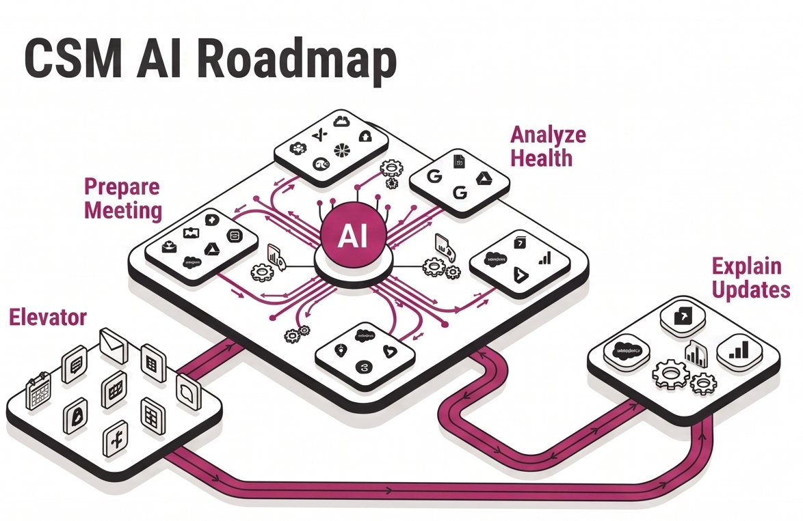
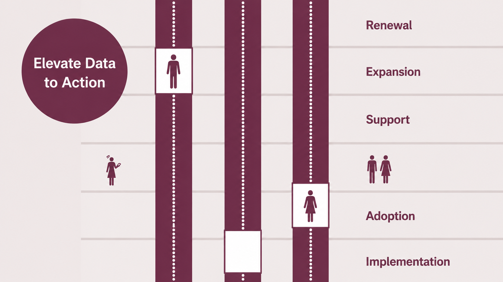
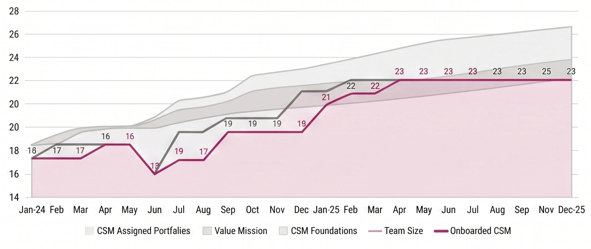
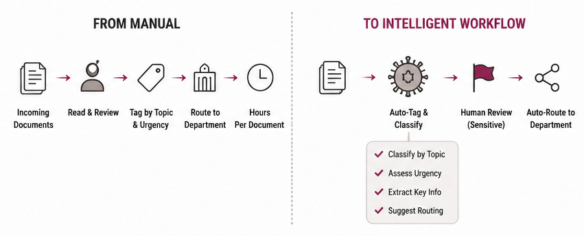
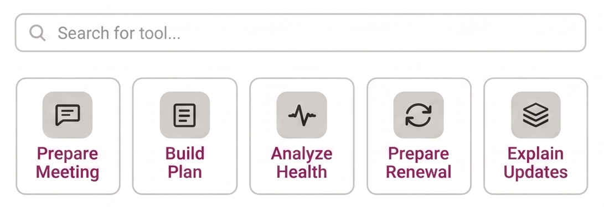
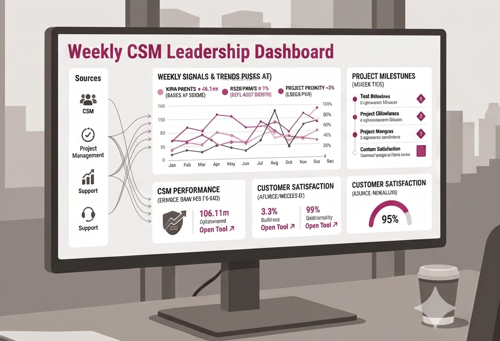
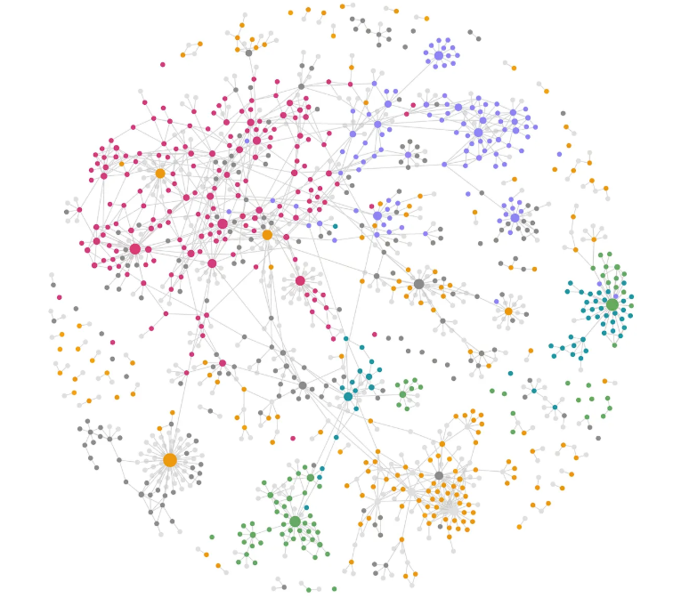

Click for more details

AI Roadmap: Tools, Agents & Orchestration
CSM AI roadmap presented to executive leadership, mapping interconnected tools, agents, and an orchestration layer across the full CSM lifecycle.

AI Roadmap: Tools, Agents & Orchestration
In early 2026, I analyzed task by task the CSM workflows and designed JAGGAER's Customer Success Managers AI roadmap, consisting of 27+ tools that will interconnect to agents. As of June, my team has decreased manual work by 6% thanks to AI tools, and our goal is much higher.

JAGGAER Elevator
A RAG per customer app that brings data from one floor to the next. Moving Customer Success past chat prompts into true task delegation. All enterprise data queryable in one place.

JAGGAER Elevator
Customer facing teams waste immense energy manually pulling threads, emails, and tickets just to get a clear picture. I designed and built a POC for Elevator, a RAG per customer app that brings data to one place. Customer data plugs in and routes to a central location, from Salesforce, Snowflake, email threads, CSM notes, all searchable in one place. This allows us the infrastructure of learning our customer base at scale. This project is still being built.

CSM Utilization
A framework that estimates how many hours each CSM spends across their accounts, factoring in customer-facing time, account tier, CSM seniority, and active products. Pulls from Salesforce, visualized in Tableau.
CSM Utilization
A framework built to estimate how many hours each CSM spends across their assigned accounts, so leadership can plan hiring with precision. Four variables drive the model: customer-facing time (meetings, prep, follow-ups), account tier, CSM seniority, and the number of active products a customer uses. Data is pulled from Salesforce and visualized in Tableau. Most calculations are automated, with light manual input from CSM managers every two months. The output guides account assignments and informs a deliberate hire-behind-the-curve strategy: grow the team intentionally, without outpacing what revenue can support.

MFA · Document Intelligence
As a student, proposed and built a system with IT to automate the tagging and routing of hundreds of classified documents arriving from security agencies worldwide, flagging sensitive ones for human review. Still in use today.
Ministry of Foreign Affairs · Document Intelligence
Research Assistant · Israel's Ministry of Foreign Affairs · Jerusalem · 2014 · 2018 We received classified documents from security agencies around the globe. Dozens, sometimes hundreds, arriving on a rolling basis. Every document needed to be read, reviewed, tagged by topic and urgency, and routed to the relevant department. It was entirely manual. It took hours. As a student, I proposed to my manager that we work with IT to build a system that would automate the tagging logic and routing workflow where possible, and flag documents requiring human review due to sensitivity. After design and QA, we shipped it. That system is still in use today. An early signal of what I'd keep doing: find the manual work, understand the system, build the fix.

CSM AI Hub
Built a secure internal AI platform for the Customer Success team. Sensitive customer data meant a public deployment wasn't an option. Architected inside corporate AWS: ECS, S3, ALB, private VPC.
CSM AI Hub
Built a secure internal AI platform for the Customer Success team. Sensitive customer data meant a public deployment wasn't an option. So we architected it inside the corporate AWS environment. Stack: ECS-hosted Nginx container serving the application, static content delivered from a connected S3 bucket, fronted by an Application Load Balancer, hosted inside a private VPC/subnet in the corporate AWS account. The result: scattered AI experiments became a governed, centralized team resource, with enterprise-grade security baked in from day one.

Leadership Dashboard
Built an internal dashboard that eliminated the need for weekly manual syncs across multiple data sources. Pulls everything into one place, giving leadership a live, consolidated view without anyone having to chase it.
Leadership Dashboard
Built an internal dashboard that eliminated the need for weekly manual syncs across multiple data sources. Instead of chasing updates across systems, everything flows into one consolidated view, giving leadership what they need without anyone having to pull it together manually. Audience: direct manager and Executive Leadership Team. More details coming.

My Second Brain
537 markdown notes. 5,046 wikilinks. Every CSM playbook, customer template, meeting summary, and AI experiment I've accumulated at JAGGAER, organized, tagged, and queryable. Built in Obsidian, connected to AI tools, version-controlled in git.
My Second Brain
I built a second brain: an AI-powered corpus of my knowledge that I continuously update and use every day. It's a living knowledge system built around my work as a NA Customer Success Manager at JAGGAER. It captures the context, decisions, processes, customer knowledge, product information, and operating models that I've built over time, organized into a clear structure that grows with the role. I use it constantly: preparing for customer meetings, exploring strategic questions, finding patterns across accounts, improving processes, and turning ideas into repeatable tools. Recently, I've been building prompt libraries, CSM resources, and new workflows with it to help scale how the team works. Inside are CSM playbooks, operating models, product knowledge across eProcurement, Sourcing, and Invoicing, customer account profiles, meeting notes with structured follow-ups, AI transformation experiments, weekly operating summaries, and a growing glossary of the people, tools, concepts, and companies connected to the work. The system was built by converting existing knowledge into a structured markdown-based environment, extracting information from documents, connecting meeting insights, and automating relationships between concepts through linked knowledge. The goal is simple: make any question about customers, team processes, or products answerable in minutes. Over time, it becomes more than documentation. It becomes a working partner that helps me think, prepare, create, and operate at scale.

Musician
Music and code come from the same place: a system with rules you learn to break. I trained in classical flute, played in orchestras, now improvise jazz.

.jpg)

Musician
Music and code come from the same place: a system with rules you learn to break. I trained in classical flute, played in orchestras and chamber ensembles, and now improvise jazz. Making something out of structure is the only way I know how to work.